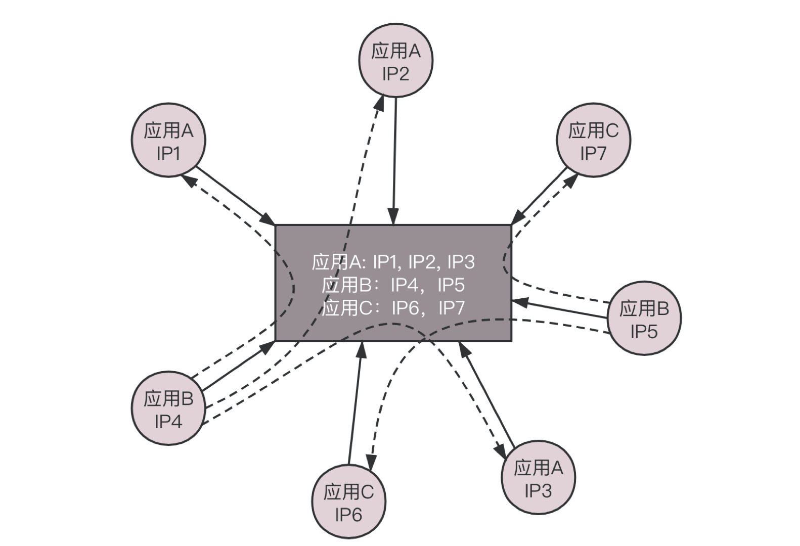
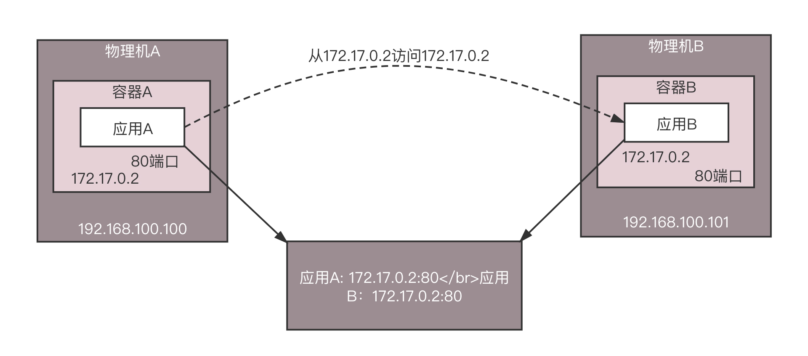
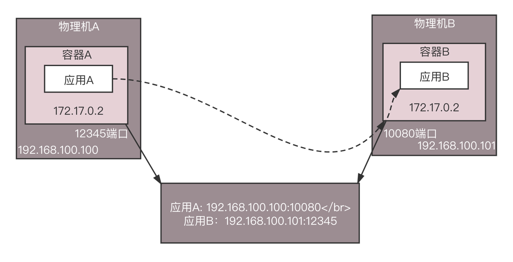
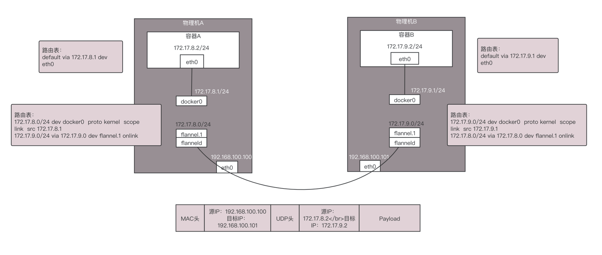
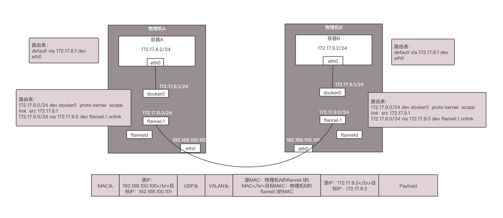

- 00 开篇词 想成为技术牛人？先搞定网络协议！.md
- 01 为什么要学习网络协议？.md
- 02 网络分层的真实含义是什么？.md
- 03 ifconfig：最熟悉又陌生的命令行.md
- 04 DHCP与PXE：IP是怎么来的，又是怎么没的？.md
- 05 从物理层到MAC层：如何在宿舍里自己组网玩联机游戏？.md
- 06 交换机与VLAN：办公室太复杂，我要回学校.md
- 07 ICMP与ping：投石问路的侦察兵.md
- 08 世界这么大，我想出网关：欧洲十国游与玄奘西行.md
- 09 路由协议：西出网关无故人，敢问路在何方.md
- 10 UDP协议：因性善而简单，难免碰到“城会玩”.md
- 11 TCP协议（上）：因性恶而复杂，先恶后善反轻松.md
- 12 TCP协议（下）：西行必定多妖孽，恒心智慧消磨难.md
- 13 套接字Socket：Talk is cheap, show me the code.md
- 14 HTTP协议：看个新闻原来这么麻烦.md
- 15 HTTPS协议：点外卖的过程原来这么复杂.md
- 16 流媒体协议：如何在直播里看到美女帅哥？.md
- 17 P2P协议：我下小电影，99%急死你.md
- 18 DNS协议：网络世界的地址簿.md
- 19 HttpDNS：网络世界的地址簿也会指错路.md
- 20 CDN：你去小卖部取过快递么？.md
- 21 数据中心：我是开发商，自己拿地盖别墅.md
- 22 VPN：朝中有人好做官.md
- 23 移动网络：去巴塞罗那，手机也上不了脸书.md
- 24 云中网络：自己拿地成本高，购买公寓更灵活.md
- 25 软件定义网络：共享基础设施的小区物业管理办法.md
- 26 云中的网络安全：虽然不是土豪，也需要基本安全和保障.md
- 27 云中的网络QoS：邻居疯狂下电影，我该怎么办？.md
- 28 云中网络的隔离GRE、VXLAN：虽然住一个小区，也要保护隐私.md
- 29 容器网络：来去自由的日子，不买公寓去合租.md
- 30 容器网络之Flannel：每人一亩三分地.md
- 31 容器网络之Calico：为高效说出善意的谎言.md
- 32 RPC协议综述：远在天边，近在眼前.md
- 33 基于XML的SOAP协议：不要说NBA，请说美国职业篮球联赛.md
- 34 基于JSON的RESTful接口协议：我不关心过程，请给我结果.md
- 35 二进制类RPC协议：还是叫NBA吧，总说全称多费劲.md
- 36 跨语言类RPC协议：交流之前，双方先来个专业术语表.md
- 37 知识串：用双十一的故事串起碎片的网络协议（上）.md
- 38 知识串：用双十一的故事串起碎片的网络协议（中）.md
- 39 知识串：用双十一的故事串起碎片的网络协议（下）.md
- 40 搭建一个网络实验环境：授人以鱼不如授人以渔.md
- 加餐1 创作故事：我是如何创作“趣谈网络协议”专栏的？.md
- 协议专栏特别福利 答疑解惑1期.md
- 协议专栏特别福利 答疑解惑2期.md
- 协议专栏特别福利 答疑解惑3期.md
- 协议专栏特别福利 答疑解惑4期.md
- 协议专栏特别福利 答疑解惑5期.md
- 结束语 放弃完美主义，执行力就是限时限量认真完成.md
30 容器网络之Flannel：每人一亩三分地
上一节我们讲了容器网络的模型，以及如何通过NAT的方式与物理网络进行互通。
每一台物理机上面安装好了Docker以后，都会默认分配一个172.17.0.0/16的网段。一台机器上新创建的第一个容器，一般都会给172.17.0.2这个地址，当然一台机器这样玩玩倒也没啥问题。但是容器里面是要部署应用的，就像上一节讲过的一样，它既然是集装箱，里面就需要装载货物。
如果这个应用是比较传统的单体应用，自己就一个进程，所有的代码逻辑都在这个进程里面，上面的模式没有任何问题，只要通过NAT就能访问进来。
但是因为无法解决快速迭代和高并发的问题，单体应用越来越跟不上时代发展的需要了。
你可以回想一下，无论是各种网络直播平台，还是共享单车，是不是都是很短时间内就要积累大量用户，否则就会错过风口。所以应用需要在很短的时间内快速迭代，不断调整，满足用户体验；还要在很短的时间内，具有支撑高并发请求的能力。
单体应用作为个人英雄主义的时代已经过去了。如果所有的代码都在一个工程里面，开发的时候必然存在大量冲突，上线的时候，需要开大会进行协调，一个月上线一次就很不错了。而且所有的流量都让一个进程扛，怎么也扛不住啊！
没办法，一个字：拆！拆开了，每个子模块独自变化，减少相互影响。拆开了，原来一个进程扛流量，现在多个进程一起扛。所以，微服务就是从个人英雄主义，变成集团军作战。
容器作为集装箱，可以保证应用在不同的环境中快速迁移，提高迭代的效率。但是如果要形成容器集团军，还需要一个集团军作战的调度平台，这就是Kubernetes。它可以灵活地将一个容器调度到任何一台机器上，并且当某个应用扛不住的时候，只要在Kubernetes上修改容器的副本数，一个应用马上就能变八个，而且都能提供服务。
然而集团军作战有个重要的问题，就是通信。这里面包含两个问题，第一个是集团军的A部队如何实时地知道B部队的位置变化，第二个是两个部队之间如何相互通信。
第一个问题位置变化，往往是通过一个称为注册中心的地方统一管理的，这个是应用自己做的。当一个应用启动的时候，将自己所在环境的IP地址和端口，注册到注册中心指挥部，这样其他的应用请求它的时候，到指挥部问一下它在哪里就好了。当某个应用发生了变化，例如一台机器挂了，容器要迁移到另一台机器，这个时候IP改变了，应用会重新注册，则其他的应用请求它的时候，还是能够从指挥部得到最新的位置。

接下来是如何相互通信的问题。NAT这种模式，在多个主机的场景下，是存在很大问题的。在物理机A上的应用A看到的IP地址是容器A的，是172.17.0.2，在物理机B上的应用B看到的IP地址是容器B的，不巧也是172.17.0.2，当它们都注册到注册中心的时候，注册中心就是这个图里这样子。

这个时候，应用A要访问应用B，当应用A从注册中心将应用B的IP地址读出来的时候，就彻底困惑了，这不是自己访问自己吗？
怎么解决这个问题呢？一种办法是不去注册容器内的IP地址，而是注册所在物理机的IP地址，端口也要是物理机上映射的端口。

这样存在的问题是，应用是在容器里面的，它怎么知道物理机上的IP地址和端口呢？这明明是运维人员配置的，除非应用配合，读取容器平台的接口获得这个IP和端口。一方面，大部分分布式框架都是容器诞生之前就有了，它们不会适配这种场景；另一方面，让容器内的应用意识到容器外的环境，本来就是非常不好的设计。
说好的集装箱，说好的随意迁移呢？难道要让集装箱内的货物意识到自己传的信息？而且本来Tomcat都是监听8080端口的，结果到了物理机上，就不能大家都用这个端口了，否则端口就冲突了，因而就需要随机分配端口，于是在注册中心就出现了各种各样奇怪的端口。无论是注册中心，还是调用方都会觉得很奇怪，而且不是默认的端口，很多情况下也容易出错。
Kubernetes作为集团军作战管理平台，提出指导意见，说网络模型要变平，但是没说怎么实现。于是业界就涌现了大量的方案，Flannel就是其中之一。
对于IP冲突的问题，如果每一个物理机都是网段172.17.0.0/16，肯定会冲突啊，但是这个网段实在太大了，一台物理机上根本启动不了这么多的容器，所以能不能每台物理机在这个大网段里面，抠出一个小的网段，每个物理机网段都不同，自己看好自己的一亩三分地，谁也不和谁冲突。
例如物理机A是网段172.17.8.0/24，物理机B是网段172.17.9.0/24，这样两台机器上启动的容器IP肯定不一样，而且就看IP地址，我们就一下子识别出，这个容器是本机的，还是远程的，如果是远程的，也能从网段一下子就识别出它归哪台物理机管，太方便了。
接下来的问题，就是物理机A上的容器如何访问到物理机B上的容器呢？
你是不是想到了熟悉的场景？虚拟机也需要跨物理机互通，往往通过Overlay的方式，容器是不是也可以这样做呢？
这里我要说Flannel使用UDP实现Overlay网络的方案。

在物理机A上的容器A里面，能看到的容器的IP地址是172.17.8.2/24，里面设置了默认的路由规则default via 172.17.8.1 dev eth0。
如果容器A要访问172.17.9.2，就会发往这个默认的网关172.17.8.1。172.17.8.1就是物理机上面docker0网桥的IP地址，这台物理机上的所有容器都是连接到这个网桥的。
在物理机上面，查看路由策略，会有这样一条172.17.0.0/24 via 172.17.0.0 dev flannel.1，也就是说发往172.17.9.2的网络包会被转发到flannel.1这个网卡。
这个网卡是怎么出来的呢？在每台物理机上，都会跑一个flanneld进程，这个进程打开一个/dev/net/tun字符设备的时候，就出现了这个网卡。
你有没有想起qemu-kvm，打开这个字符设备的时候，物理机上也会出现一个网卡，所有发到这个网卡上的网络包会被qemu-kvm接收进来，变成二进制串。只不过接下来qemu-kvm会模拟一个虚拟机里面的网卡，将二进制的串变成网络包，发给虚拟机里面的网卡。但是flanneld不用这样做，所有发到flannel.1这个网卡的包都会被flanneld进程读进去，接下来flanneld要对网络包进行处理。
物理机A上的flanneld会将网络包封装在UDP包里面，然后外层加上物理机A和物理机B的IP地址，发送给物理机B上的flanneld。
为什么是UDP呢？因为不想在flanneld之间建立两两连接，而UDP没有连接的概念，任何一台机器都能发给另一台。
物理机B上的flanneld收到包之后，解开UDP的包，将里面的网络包拿出来，从物理机B的flannel.1网卡发出去。
在物理机B上，有路由规则172.17.9.0/24 dev docker0 proto kernel scope link src 172.17.9.1。
将包发给docker0，docker0将包转给容器B。通信成功。
上面的过程连通性没有问题，但是由于全部在用户态，所以性能差了一些。
跨物理机的连通性问题，在虚拟机那里有成熟的方案，就是VXLAN，那能不能Flannel也用VXLAN呢？
当然可以了。如果使用VXLAN，就不需要打开一个TUN设备了，而是要建立一个VXLAN的VTEP。如何建立呢？可以通过netlink通知内核建立一个VTEP的网卡flannel.1。在我们讲OpenvSwitch的时候提过，netlink是一种用户态和内核态通信的机制。
当网络包从物理机A上的容器A发送给物理机B上的容器B，在容器A里面通过默认路由到达物理机A上的docker0网卡，然后根据路由规则，在物理机A上，将包转发给flannel.1。这个时候flannel.1就是一个VXLAN的VTEP了，它将网络包进行封装。
内部的MAC地址这样写：源为物理机A的flannel.1的MAC地址，目标为物理机B的flannel.1的MAC地址，在外面加上VXLAN的头。
外层的IP地址这样写：源为物理机A的IP地址，目标为物理机B的IP地址，外面加上物理机的MAC地址。
这样就能通过VXLAN将包转发到另一台机器，从物理机B的flannel.1上解包，变成内部的网络包，通过物理机B上的路由转发到docker0，然后转发到容器B里面。通信成功。

小结
好了，今天的内容就到这里，我来总结一下。
基于NAT的容器网络模型在微服务架构下有两个问题，一个是IP重叠，一个是端口冲突，需要通过Overlay网络的机制保持跨节点的连通性。
Flannel是跨节点容器网络方案之一，它提供的Overlay方案主要有两种方式，一种是UDP在用户态封装，一种是VXLAN在内核态封装，而VXLAN的性能更好一些。
最后，给你留两个问题：
通过Flannel的网络模型可以实现容器与容器直接跨主机的互相访问，那你知道如果容器内部访问外部的服务应该怎么融合到这个网络模型中吗？
基于Overlay的网络毕竟做了一次网络虚拟化，有没有更加高性能的方案呢？
我们的专栏更新到第30讲，不知你掌握得如何？每节课后我留的思考题，你都有没有认真思考，并在留言区写下答案呢？我会从已发布的文章中选出一批认真留言的同学，赠送学习奖励礼券和我整理的独家网络协议知识图谱。
欢迎你留言和我讨论。趣谈网络协议，我们下期见！
© 2019 - 2023 Liangliang Lee. Powered by gin and hexo-theme-book.